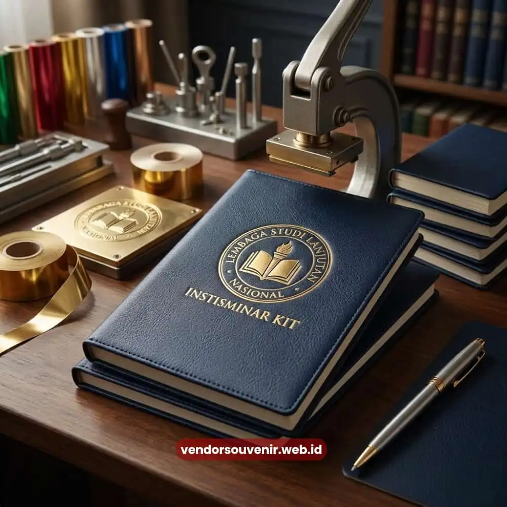

Daftar Isi
Mencari percetakan seminar kit yang tepercaya berarti mencari mitra yang mampu menyelesaikan produksi tas, notebook, pulpen, dan atribut seminar lainnya secara tepat waktu, dengan kualitas cetak rapi, dan harga yang bersaing.
Kebutuhan ini paling sering muncul dari panitia seminar, pelatihan korporat, workshop instansi, hingga acara pelantikan yang menuntut tampilan profesional di setiap paket yang diterima peserta.
Artikel ini membahas secara menyeluruh apa itu seminar kit, mengapa kualitas percetakan sangat menentukan kesan acara, serta bagaimana proses pemesanan yang efisien dapat menghemat waktu dan anggaran panitia.
- Seminar kit adalah paket perlengkapan standar peserta acara yang mencakup tas, notebook, pulpen, dan materi cetak lainnya.
- Kualitas percetakan memengaruhi persepsi profesionalisme penyelenggara di mata peserta dan tamu undangan.
- Harga seminar kit dipengaruhi oleh jenis bahan, jumlah pesanan, tingkat kustomisasi desain, dan tenggat produksi.
- Proses pemesanan yang jelas dan konsultasi desain di awal akan mempercepat produksi tanpa mengorbankan kualitas.
- Pemesanan dalam jumlah besar umumnya mendapatkan penyesuaian harga per unit yang lebih kompetitif.
Apa Itu Seminar Kit dan Mengapa Penting untuk Acara Korporat?
Seminar kit adalah kumpulan perlengkapan cetak dan non-cetak yang dibagikan kepada peserta seminar, pelatihan, workshop, atau konferensi sebagai identitas sekaligus alat bantu selama acara berlangsung.
Isinya umumnya mencakup tas jinjing, notebook atau buku catatan, pulpen, map dokumen, hingga name tag yang dicetak dengan identitas visual acara.
Bagi penyelenggara, seminar kit bukan sekadar pelengkap seremonial, melainkan representasi nyata dari profesionalisme dan keseriusan penyelenggaraan acara tersebut.
Ketika peserta menerima seminar kit dengan cetakan rapi, warna konsisten, dan bahan yang kokoh, kesan pertama terhadap acara langsung terbangun secara positif.
Sebaliknya, hasil cetak yang buram, warna pudar, atau jahitan tas yang mudah rusak dapat menurunkan kredibilitas penyelenggara di mata peserta maupun sponsor.
Karena itu, pemilihan percetakan seminar kit yang berpengalaman menjadi keputusan strategis, bukan sekadar transaksi administratif semata.
Mengapa Memilih Percetakan Profesional untuk Seminar Kit?
Percetakan profesional untuk seminar kit menjamin konsistensi warna, ketepatan ukuran, dan daya tahan bahan yang sulit dicapai oleh percetakan tanpa pengalaman spesifik di produk seminar.
Konsistensi ini penting karena seminar kit biasanya diproduksi dalam jumlah besar sekaligus, sehingga setiap unit harus memiliki kualitas yang seragam.
Percetakan yang berpengalaman menangani seminar kit memahami karakteristik setiap material, mulai dari kanvas untuk tas, kertas HVS atau art paper untuk notebook, hingga tinta yang tidak mudah luntur pada permukaan plastik atau kulit sintetis.
Pemahaman teknis ini menjadi pembeda utama antara hasil cetak yang tampak murahan dan hasil cetak yang benar-benar merepresentasikan identitas brand acara secara meyakinkan.
Selain aspek teknis produksi, percetakan profesional juga umumnya menyediakan layanan desain atau setidaknya pendampingan teknis file, sehingga panitia yang tidak memiliki tim desain internal tetap dapat menghasilkan seminar kit dengan tampilan visual yang matang dan sesuai identitas acara.

Kualitas Cetak Seminar Kit Profesional
Bagaimana Cara Kerja Proses Percetakan Seminar Kit?
Proses percetakan seminar kit umumnya dimulai dari konsultasi kebutuhan, dilanjutkan dengan penentuan desain, produksi sampel jika diperlukan, produksi massal, lalu quality control sebelum pengiriman.
Setiap tahapan memiliki peran penting untuk memastikan hasil akhir sesuai ekspektasi panitia.
Tahap konsultasi menjadi fondasi utama karena di sinilah kebutuhan spesifik acara, seperti jumlah peserta, tema warna, dan anggaran, didiskusikan secara detail.
Setelah kebutuhan jelas, tim desain akan menyusun mock-up visual yang mencerminkan identitas acara sebelum masuk ke tahap produksi.
Untuk pesanan dalam skala besar, sampel produksi awal sangat disarankan agar panitia dapat mengevaluasi hasil cetak sebelum seluruh jumlah pesanan diproduksi.
Tahap quality control menjadi penentu akhir kelayakan produk sebelum dikirim. Pada tahap ini, setiap unit diperiksa dari sisi ketajaman cetak, kerapian jahitan, dan kesesuaian warna dengan file desain yang telah disepakati.
Faktor yang Memengaruhi Harga Percetakan Seminar Kit
Harga percetakan seminar kit ditentukan oleh kombinasi jenis bahan, tingkat kerumitan desain, jumlah unit pesanan, dan tenggat waktu produksi.
Semakin besar volume pesanan, umumnya semakin efisien pula biaya produksi per unit karena bahan baku dapat dibeli dan diproses dalam skala yang lebih ekonomis.
Jenis bahan menjadi variabel paling signifikan dalam penentuan harga. Tas berbahan kanvas tebal dengan sablon multiwarna tentu memiliki biaya produksi lebih tinggi dibandingkan tas spunbond dengan cetakan satu warna.
Begitu pula notebook dengan cover hardcover dan finishing emboss akan berbeda signifikan dari notebook softcover standar.
Tenggat waktu produksi turut memengaruhi struktur harga. Pesanan dengan waktu produksi mendesak (rush order) umumnya dikenakan biaya tambahan karena membutuhkan prioritas jadwal produksi dan jam kerja tambahan dari tim percetakan.
Karena itu, semakin awal panitia melakukan pemesanan, semakin fleksibel pula ruang negosiasi harga yang dapat dicapai.
Apa Saja Kesalahan Umum saat Memesan Seminar Kit?
Kesalahan paling umum saat memesan seminar kit adalah menunda pemesanan hingga mendekati tanggal acara, tidak menyiapkan file desain dengan resolusi memadai, dan tidak melakukan pengecekan sampel sebelum produksi massal dilakukan.
Ketiga kesalahan ini berpotensi menimbulkan hasil cetak yang tidak sesuai ekspektasi sekaligus menambah biaya produksi akibat revisi mendadak.
Pemesanan mendadak sering memaksa panitia menerima kompromi pada kualitas bahan atau detail desain hanya demi mengejar tenggat waktu.
Selain itu, file desain dengan resolusi rendah dapat menghasilkan cetakan buram atau pecah, terutama pada elemen logo dan teks kecil.
Melewatkan tahap pengecekan sampel juga berisiko tinggi, sebab kesalahan warna atau ukuran baru terdeteksi setelah seluruh unit selesai diproduksi, yang tentu jauh lebih sulit dan mahal untuk diperbaiki.
Tips Memastikan Hasil Seminar Kit Sesuai Ekspektasi
Untuk memastikan hasil seminar kit sesuai ekspektasi, panitia disarankan menyiapkan brief kebutuhan secara detail, menentukan anggaran di awal, meminta contoh hasil cetak sebelumnya, dan melakukan konfirmasi desain final sebelum produksi massal berjalan.
Brief yang jelas mempercepat proses komunikasi dengan tim percetakan sekaligus meminimalkan risiko revisi berulang.
Menentukan anggaran sejak awal juga membantu tim percetakan merekomendasikan kombinasi bahan dan finishing yang paling sesuai dengan kebutuhan tanpa melebihi kapasitas anggaran acara.
Selain itu, meminta portofolio atau contoh hasil cetak sebelumnya dari percetakan yang dituju dapat menjadi indikator objektif mengenai kualitas kerja yang dapat diharapkan.
Perbandingan Cetak Satuan vs Cetak Massal untuk Seminar Kit
Cetak satuan seminar kit umumnya digunakan untuk kebutuhan sampel atau acara berskala kecil dengan jumlah peserta terbatas, sementara cetak massal lebih efisien secara biaya untuk acara berskala besar dengan ratusan hingga ribuan peserta.
Cetak satuan memberikan fleksibilitas variasi desain namun biaya per unit relatif lebih tinggi, sedangkan cetak massal menawarkan efisiensi biaya melalui skala produksi namun menuntut keseragaman desain di seluruh unit.
Bagi panitia yang mengelola acara dengan segmentasi peserta berbeda, seperti pembeda warna untuk pembicara, panitia, dan peserta umum, kombinasi antara cetak satuan untuk kelompok kecil dan cetak massal untuk kelompok besar sering menjadi solusi paling proporsional dari sisi anggaran maupun kebutuhan identifikasi visual.
Memilih percetakan seminar kit yang tepercaya bukan sekadar soal harga murah, melainkan soal ketepatan kualitas, konsistensi produksi, dan kemampuan memenuhi tenggat waktu acara.
Perencanaan yang matang sejak tahap konsultasi hingga quality control akan memastikan seminar kit yang diterima peserta benar-benar merepresentasikan profesionalisme penyelenggara.

Butuh Bantuan Merancang Seminar Kit Custom?
Tim ahli kami siap membantu Anda menyusun paket seminar eksklusif yang menarik.
Pilihan barang akan disesuaikan dengan ketersediaan budget dan kebutuhan Anda.
Seluruh desain akan kami selaraskan dengan identitas visual acara Anda.
Dapatkan penawaran harga terbaik untuk pesanan massal!
FAQ Seputar Percetakan Seminar Kit
Berapa lama waktu produksi seminar kit umumnya berlangsung?
Waktu produksi seminar kit umumnya bervariasi tergantung jumlah pesanan dan tingkat kerumitan desain, sehingga sebaiknya dikonfirmasikan langsung saat konsultasi kebutuhan acara.
Apakah bisa memesan seminar kit dalam jumlah kecil?
Bisa, sebagian percetakan seminar kit tetap melayani pemesanan dalam jumlah kecil, meskipun harga per unit umumnya lebih ekonomis pada pemesanan dalam jumlah besar.
Apa saja isi standar dari sebuah seminar kit?
Isi standar seminar kit umumnya mencakup tas, notebook, pulpen, dan map dokumen, namun komposisinya dapat disesuaikan dengan kebutuhan dan anggaran acara.
Apakah desain seminar kit bisa disesuaikan dengan tema acara?
Ya, desain seminar kit dapat disesuaikan dengan tema, warna identitas, dan logo acara agar selaras dengan konsep penyelenggaraan.
Bagaimana cara memulai konsultasi pemesanan seminar kit?
Cara memulai konsultasi pemesanan seminar kit adalah dengan menghubungi tim percetakan untuk menyampaikan kebutuhan jumlah, jenis bahan, dan tenggat waktu acara secara langsung.
Maroon Souvenir
Partner Corporate Gift terpercaya di Indonesia. Berpengalaman melayani ratusan perusahaan sejak 2018.
Lihat Portofolio Kami